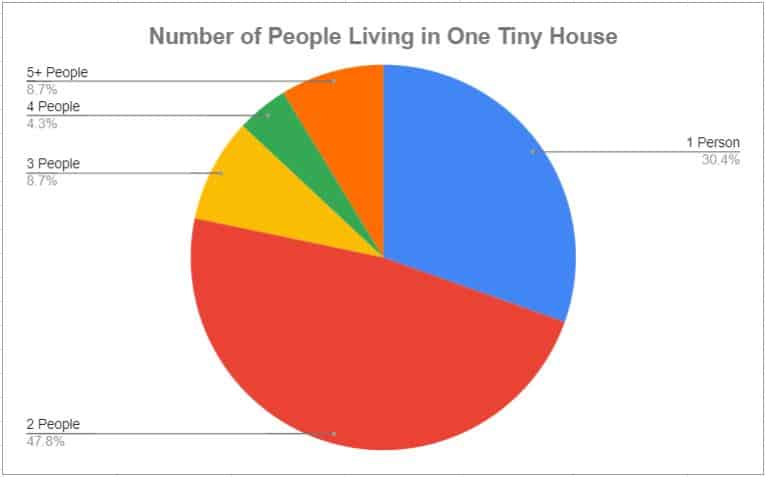

January 3, 2020

This article has been reviewed in accordance with our editorial policy.
The tiny house trend has been popular for about 5 years now. And there are still lots of questions, for example; How long do families actually live in tiny houses? This can be hard to answer since there is not a solid way to collect this data.
So, how long do families live in tiny houses? A recent poll of people currently living tiny showed that over 50% of them have been living in a tiny house for 1-4 years. This would align with around the time tiny houses grew in popularity. However, some families have been living tiny for much longer.
My husband and I have been living tiny for almost 4 years now! So we fit in the majority. We have lots of people ask us about tiny house life and we want the internet to have a better understanding from an informed source.
How long people actually live in their tiny houses is a big question on the internet. However, it is difficult to get this data, since tiny houses are not titled and sold like regular houses. Also, a lot of tiny housers live off-grid.
We cannot pull deed records or view almost any recorded data for these homes. Even if you are able to look at when the houses were built you cannot get a record of used sales for many, if not most, tiny houses.
In order to still provide as accurate data as possible, Specialized Tinys, LLC conducted a survey to find out more information about tiny housers.
A recent survey of people who are living in tiny houses revealed that over 50% of tiny housers have lived tiny for 1-4 years. And over 27% have lived tiny for more than 4 years.
All rights reserved, this site and its contents are copyright © 2020 and onward of Specialized Tinys, LLC.*
The survey showed that out of those who are living tiny, 17.3% have been doing it less than a year, 28% for 1-2 years, 28% for 2-4 years, 10.7% for 4-6 years, 8% for 6-9 years, and 8% for over 9 years.
With this data, we can say that it is likely that a lot of people who go tiny stay tiny. If this were not the case then most of the participants would have been in the "less than a year" category.
Many people go tiny to STAY tiny. Data shows that over 1/4th of tiny housers have been living tiny for over 4 years. And still over half of those tiny housers have lived tiny for over 6 years!
According to a report by Tiny Society in 2018, 2 out of 5 tiny housers are over 50 years old. Lots of older people are deciding to live tiny for the cost and convenience.
It can get tiresome to be cleaning and maintaining a large house for years. Also, after your children have moved out of the house you don't always need the space.
But also there are lots of younger people who want to live in a tiny house for a long time, if not forever. They are starting to see how much money they can save, by not buying a big house or owning lots of stuff.
You can even get tiny houses with two bedrooms to accommodate families. This way you can own a small home and stay out of debt or even spend more time traveling with your family.
According to Tiny Society in 2018, it was reported that 89% of tiny house owners maintain less debt from credit cards than the typical American. It was also reported that 60% of people who live tiny have absolutely no credit card debt, and moreover 55% of people who live tiny also have larger savings accounts than the average homeowner.
Additionally, they also reported that 68% of tiny housers don't even have a mortgage. There are lots of reasons to live in a tiny house permanently, whether it's the money, environmental footprint, or even having less housework.
However, there are a lot of people who only plan on staying in a tiny house for a couple of years. Just under half of the tiny housers haven't lived in their house for over 2 years yet.
I have heard a lot of young couples say they want to live tiny for a couple of years to save money for a house. And this isn't just young couples. I have heard lots of people say they want to go tiny for a few years to save money or prepare for another part of life.
Or people want to be able to travel around for a couple of years and then come home. There is a huge appeal to go tiny in order to travel around, you can spend a year or two exploring an entire country.
There are lots of reasons to go tiny! Some reasons are permanent and some of them are not. Living tiny is a lifestyle that is amenable to fit most people.

All rights reserved, this site and its contents are copyright © 2020 and onward of Specialized Tinys, LLC.*
Another question we are all wondering; "How many people live in a tiny house?" The graph above shows data recently collected from current tiny house owners.
The data shows that 30.4% of tiny housers live by themselves, 47.8% have 2 people in the house, 8.7% have 3, 4.3% have 4, and 8.7% have 5 or more people living in their tiny house.
Almost half of tiny houses have two people living in them, this is definitely the majority. And the second most popular option is living by yourself, with 30% of tiny housers doing this.
But still, over 20% of tiny housers are living with their family. Going tiny doesn't mean you have to live by yourself. You can have a family in a tiny house too.
Even more interesting, out of these respondents, 82.6% of tiny house owners have pets in their house too. Most people who go tiny, do so with at least one pet.
The data showed that 60.9% of them had at least one cat, and 47.8% had at least one dog. However, 65.2% of tiny housers have more than one pet in their house, compared to only 17.4% of all tiny housers who only have one pet living with them.
A small house can hold as much happiness as a big one.
Fortune cookie
A fortune cookie once said a small house can hold as much happiness as a big one. Tiny houses are for all different types of people and all different amounts of them.
Whether you live by yourself or you have a family, you can still go tiny. The majority of tiny housers are couples, but there are still lots of other types. And almost all of them have fur friends living with them too.
As tiny houses grow in popularity, their locations are expanding. Tiny houses can be found all over the world. America is starting to grow in popularity and lots of places are becoming accepting of tiny houses.
Lots of tiny houses travel as well. We have lived in 5 states in our tiny house. It can be hard to pinpoint where a lot of tiny houses are actually located, especially ones that live off the grid.
However, in America, an over representative amount of tiny houses are located in California and Florida. The next most popular states are Oregon, Washington, and Colorado.
Let's take a look at some tiny house facts. All of the following statistics are from Tiny Society.
On average tiny houses are 100-400 square feet in size.
The average mortgage for a tiny house is around $50,000, and for a standard homeowner, it is around $250,000. Only 68% of tiny housers have a mortgage.
In 1983, the average home was 1,725 square feet and in 2013 it was reported to be 2,598. That's over a 50% increase in just 20 years.
144 tiny houses can fit inside a football field, 17,424 tiny houses can fit inside Disneyland California, and 2,020 tiny houses can fit on the Golden Gate Bridge.
There was very low interest in tiny houses in 2004, but there has been a steady increase ever since. Tiny houses reached about 30% of their popularity in 2014, over 10 years. Then interest doubled in one year, reaching 70% in 2015, and it has been steadily increasing since.
The average listing price on tinyhouselistings.com was $46,300.
Homes beneath the 500 square feet range are appreciating twice as fast as the overall market, according to realtor.com (19% vs. 9%).
Including tiny houses built on a foundation, then the average price is $119,000, according to realtor.com.
Let's face it, tiny houses are not going away. They have been increasing in popularity for several years now. And even before that lots of people lived in their RVs or other small homes.
Understanding the increasing desire for tiny houses will help laws and regulations be adjusted to fit them in as well. We cannot advocate for tiny houses if we do not understand the people that live in them.
Understanding how others live tiny and why may help us understand more about how we can do the same or even achieve similar goals. There are many ways and reasons to live tiny, to fit most lifestyles.
My husband and I decided to go tiny almost 4 years ago. We were living in Vegas at the time and my husband saw a tiny house on TV. Soon after he was obsessed.
Frankly, I was not very interested, but he was constantly looking up tiny houses and ideas. One thing I absolutely love about my husband is that he never stops learning.
When people get home from work and are watching TV, my husband is researching and learning something new. He has taught himself almost everything you need to know about solar off of YouTube!
So the research continued. One day he finally came to me and said he wanted to build a tiny house. I said no. But then he brought it up again, and again.
Soon we started to talk about the idea. We wanted to buy a home, instead of renting, but we also were planning on moving frequently. So it seemed like too much stress to buy and sell a house in a year.
My husband knew that he could build a tiny house himself, and then we would own something and not have to rent. Plus we could continue to move it with us.
Owning a self-sustainable house for around $30,000 is what sold me. It was really a perfect idea for us. At that time I got a great promotion and moved to Utah for the job.
My husband stayed in Vegas for another 4 months to build our home. He worked nonstop, spending every weekend and evening on our home. He had some help from a couple of friends, but he built most of our house in 4 months, while still working a full-time job.
We moved into it before it was quite finished, and worked on it as we lived in it. Some things were harder than we thought they would be and some things were easier.
We found land to stay on in Utah and a year later we moved to Virginia. We stayed there for 17 months and then moved to the Pacific Northwest. And six months later we moved to northern Nevada.
Living tiny has allowed us to do lots of things that would have not otherwise been feasible. We've seen so many places living tiny and it has allowed us to save so much money. It was the perfect idea for us.
Do people live in tiny houses? Lots of people live in tiny houses. As they grow in popularity, more and more are starting to understand the simplicity and cost-effectiveness of living in something smaller. I have heard so many people say they could never go tiny, and then after seeing my house, say the complete opposite.
How much does it cost to live in a tiny house? The cost of living in a tiny house varies considerably depending on if you are financing the house, paying a lot rent, or own everything free and clear. Lot rent for tiny houses is around $500 on average. However, the daily cost of living tiny will likely be much cheaper than a regular home, due to less space to heat, cheaper property tax, and more.
* Survey conducted in December 2019 by Specialized Tinys.